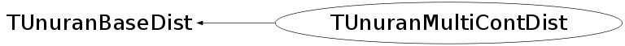

class TUnuranMultiContDist: public TUnuranBaseDist
TUnuranMultiContDist class describing multi dimensional continuous distributions. It is used by TUnuran to generate a set of random numbers according to this distribution via TUnuran::Sample(double *). The class can be constructed from a multi-dimensional function (TF1 pointer, which can be actually also a TF2 or a TF3). It provides a method to set the domain of the distribution ( SetDomain ) which will correspond to the range of the generated random numbers. By default the domain is [(-inf,-inf,...)(+inf,+inf,...)], indipendently of the range set in the TF1 class used to construct the distribution. The derivatives of the pdf which are used by some UNURAN methods are estimated numerically in the Derivative() method. Some extra information (like distribution mode) can be set using SetMode. Some methods require instead of the pdf the log of the pdf. This can also be controlled by setting a flag when constructing this class.
Function Members (Methods)
public:
| TUnuranMultiContDist(const TUnuranMultiContDist&) | |
| TUnuranMultiContDist(const ROOT::Math::IMultiGenFunction& pdf, bool isLogPdf = false) | |
| TUnuranMultiContDist(TF1* func = 0, unsigned int dim = 0, bool isLogPdf = false) | |
| virtual | ~TUnuranMultiContDist() |
| static TClass* | Class() |
| virtual TUnuranMultiContDist* | Clone() const |
| double | Derivative(const double* x, int icoord) const |
| const double* | GetLowerDomain() const |
| const double* | GetMode() const |
| const double* | GetUpperDomain() const |
| void | Gradient(const double* x, double* grad) const |
| virtual TClass* | IsA() const |
| bool | IsLogPdf() const |
| unsigned int | NDim() const |
| TUnuranMultiContDist& | operator=(const TUnuranMultiContDist& rhs) |
| double | Pdf(const double* x) const |
| void | SetDomain(const double* xmin, const double* xmax) |
| void | SetMode(const double* x) |
| virtual void | ShowMembers(TMemberInspector& insp) |
| virtual void | Streamer(TBuffer& b) |
| void | StreamerNVirtual(TBuffer& b) |
Data Members
private:
| bool | fIsLogPdf | flag to control if function pointer represent log of pdf |
| vector<double> | fMode | vector representing the x coordinates of the maximum of the pdf |
| bool | fOwnFunc | flag to indicate if class manages the function pointers |
| const ROOT::Math::IBaseFunctionMultiDim* | fPdf | pointer to the pdf |
| vector<double> | fXmax | vector with upper x values of the domain |
| vector<double> | fXmin | vector with lower x values of the domain |
Class Charts
{kind=link}
{kind=link}
{kind=link}
{kind=link}

Function documentation
TUnuranMultiContDist(TF1* func = 0, unsigned int dim = 0, bool isLogPdf = false)
Constructor from a TF1 object representing the Probability density function.
The derivatives of the Pdf are estimated, when required by the UNURAN algorithm,
using numerical derivation.
If a value of dim 0 is passed , the dimension of the function is taken from TF1::GetNdim().
This works only for 2D and 3D (for TF2 and TF3 objects).
TUnuranMultiContDist(const ROOT::Math::IMultiGenFunction& pdf, bool isLogPdf = false)
Constructor as before but from a generic function object interface for multi-dim functions
TUnuranMultiContDist * Clone() const
Clone (required by base class)
{ return new TUnuranMultiContDist(*this); }void SetDomain(const double* xmin, const double* xmax)
set the domain of the distribution giving an array of minimum and maximum values
By default otherwise the domain is undefined, i.e. is [-inf,+inf]
To remove the domain do a SetDomain(0,0).
There is no possibility to have a domain defined in only one coordinate. Use instead inf or DOUBLE_MAX to
specify un infinite domain in that coordinate
void SetMode(const double* x)
set the mode of the distribution (coordinates of the distribution maximum values)
const double * GetLowerDomain() const
get the distribution lower domain values. Return a null pointer if domain is not defined
const double * GetUpperDomain() const
get the distribution upper domain values. Return a null pointer if domain is not defined
const double * GetMode() const
get the mode (vector of coordinate positions of the maxima of the distribution)
If a mode has not defined return a NULL pointer
bool IsLogPdf() const
flag to control if given function represent the log of a pdf
{ return fIsLogPdf; }void Gradient(const double* x, double* grad) const
evaluate the gradient vector of the Pdf. Used by UnuRan
double Derivative(const double* x, int icoord) const
evaluate the partial derivative for the given coordinate. Used by UnuRan